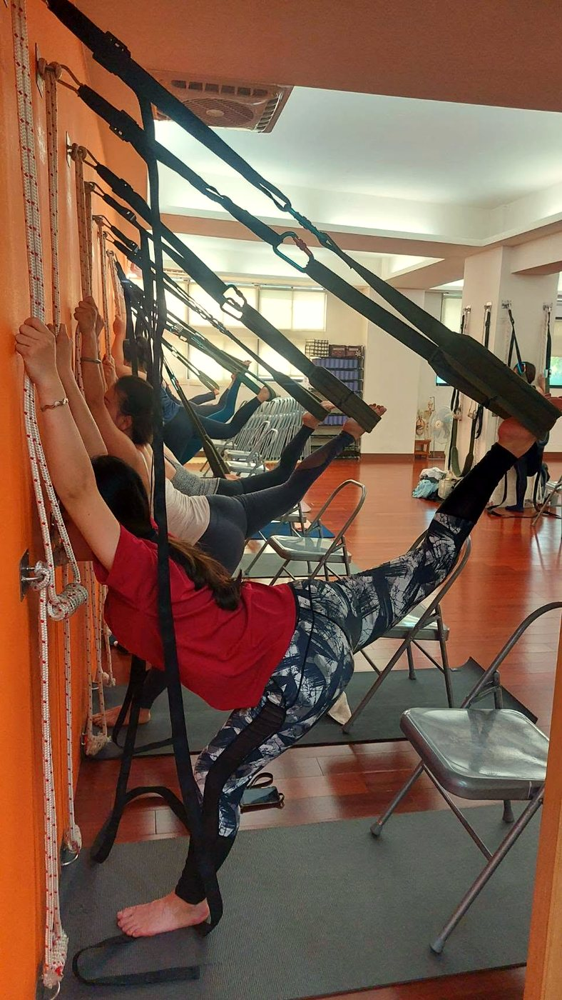

AI 體態檢測量出來的是數字，老師要看的是「你在哪裡撐」：從角度數據看懂代償連鎖

- 數字只是表象，連鎖才是本質：AI 系統算出的「頭前傾 12 度」或「骨盆前傾 16 度」只是幾何結果；人體遵循「區域相互依存理論（Regional Interdependence）」，一個關節的位移往往是另一個關節卡死的代償代價。
- 「受害者」與「加害者」的辨識：最酸痛緊繃的部位（如後頸肩胛）通常是被動拉長的受害者，真正該放鬆的是前方短縮的胸小肌與胸鎖乳突肌。
- 拒絕盲目「把兩邊扳正」：人體並非絕對對稱的機械零件；老師當面解讀的核心在於拆解「你的身體目前靠哪裡在借力硬撐」，引導深層核心接管支撐。
- 中樞與神經病變紅旗：若出現手指精細動作失靈、步態踩棉花失衡或神經根電擊痛，切勿當成一般代償，請立即就醫排查。
很多人對 AI 體態檢測的直覺想像是：「站在鏡頭前拍幾張照片，系統吐出一張滿是紅黃綠標記的報告，告訴我頭偏了幾度、骨盆歪了幾公分，然後像修機器一樣把歪的地方『喬正』。」然而在真正的運動醫學與力學臨床視野中，量出角度數字的那一刻，真正的專業判讀才剛剛拉開序幕。因為骨骼從不單獨犯錯，每一個偏移的角度背後，都是身體在長年重力對抗中，為了生存所發展出的一套悲壯代償史。
區域相互依存理論：為什麼痛點從來不是真正的起點？
現代復健醫學極為重視「區域相互依存理論（Regional Interdependence）」。該理論清楚揭示：人體是一個緊密相連的張拉整體（Tensegrity）動力網絡，在遠離主訴疼痛部位的遠端關節障礙，往往是引發局部症狀的根本驅動力：
- 相鄰關節的「穩定—活動（Mobility-Stability）」交替法則：人體由下而上呈現精巧的力學交替：腳踝需要「活動度」、膝蓋需要「穩定度」、髖關節需要「極大活動度」、腰椎需要「穩定度」、胸椎需要「多維活動度」、肩胛骨需要「動態穩定度」、頸椎需要「中立穩定度」。
- 當活動關節「卡死」，穩定關節就必須「犧牲」：當你每天久坐 8 小時導致胸椎（T4–T8）活動度喪失、卡在後凸僵直狀態時，胸椎不再具備旋轉與伸展能力。但日常生活依然需要轉頭看後照鏡、抬頭看螢幕，於是上下相鄰的「頸椎（C4–C7）」與「腰椎（L1–L5）」被迫過度活動借角度代償。久而久之，原本應負責穩定的頸椎小面關節便會發生磨損，引發頸因性頭痛與退化性椎間盤突出。
- AI 數字的局限性：AI 可以在側視照片上標出「頸椎前探 15 度」，但 AI 不會知道這個 15 度究竟是因為枕下肌群原發痙攣，還是因為胸椎卡死、亦或是骨盆前傾導致全身重心前移的代償結果。
臨床辨識關鍵：分清誰是「受害者」，誰是「加害者」
在鑫彥瑜珈的當面一對一解讀中，老師最核心的工作就是幫學員分清動力鏈中的「加害者」與「受害者」：
| 臨床角色 | 肌肉典型位置 | 生理狀態 | 常見錯誤處置 | 正確科學對策 |
|---|---|---|---|---|
| 受害者（Symptom Area） | 上斜方肌、提肩胛肌、下背豎脊肌 | 長年處於「被動拉長型過載（Long and Tight）」，肌纖維缺血缺氧發出酸痛訊號 | 一直去大力深層按摩、揉捏敲打，甚至強烈被動拉筋 | 停止盲目揉捏拉長，提供外部支撐（如壁繩卸載），避免被重力持續撕扯 |
| 加害者（Silent Driver） | 胸小肌、胸鎖乳突肌、深層髂腰肌 | 處於「短縮型高張力（Short and Tight）」，沉默地將骨骼向前下方死死牽拉 | 日常完全感覺不到酸痛，因而常年被忽視不理 | 精準進行深層肌筋膜放鬆與神經交互抑制延展，切斷代償源頭 |

真正要問的問題：不是「你站得直不直」，而是「你靠哪裡在撐」
這是鑫彥瑜珈體態判讀哲學中最核心的靈魂：大家最常見的迷思是以為「體態不好就把它硬挺起來」。但我們真正在意的是：「你的身體現在到底靠哪裡在撐？」
- 下背代償型：當站立時骨盆前傾，深層腹橫肌與臀大肌「休眠下線」，為了不讓上半身向前摔倒，身體會命令腰方肌與表層豎脊肌 24 小時如同鋼索般緊緊拉住腰椎，表現為「站久了腰部發酸發硬」。
- 肩膀代償型：胸椎無力直立、肩胛骨前引前傾，手臂在下垂時失去骨骼支撐力線，身體只能強迫上斜方肌與提肩胛肌「聳肩懸吊」整條手臂的重量，表現為「下班時肩膀緊如鋼板」。
- 關節鎖死代償型：雙腳站立時膝關節過度伸展（Genu Recurvatum 膝超伸），完全靠後十字韌帶與後關節囊卡死來偷懶支撐，大腿肌肉完全不發力，表現為「站一下就膝蓋後側發酸、小腿腫脹」。
為什麼當面一對一解讀，無可取代？
這正是為什麼我們堅持「AI 檢測必須由老師當面一對一解讀」：
在短短 10 到 15 分鐘的當面對話中，老師會將冰冷的角度數字與您的生活實況無縫對接：「您看，您右肩高出 1.8 公分，同時骨盆向右側旋轉。這和您習慣用右手單肩背重包、抱小孩時習慣用右髖頂著完全吻合。」隨後，老師會引導您在壁繩輔助下進行一次微小的力線歸位，讓您親身在神經層面感受到：「原來把前側胸小肌放鬆之後，後頸的緊繃感竟然會在幾秒鐘內自然消失一大半！」
看懂身體的求救訊號，不再盲目代償硬撐
數字只是起點，解讀才是關鍵。鑫彥瑜珈提供首次 NT$299 AI 體態檢測（原價 NT$699，約 20 分鐘），現場由專業老師為您當面解碼您的動力鏈代償地圖，找到根本解決之道。
預約首次 NT$299 AI 體態檢測（含動力鏈代償深度解析）神經結構急症紅旗（Red Flags）
專業安全邊界：AI 體態檢測為運動功能性力線評估，非醫療診斷。若學員在檢測過程中被觀察到或主訴以下徵兆，屬於醫學急症，老師會立即建議就醫排查：
1. 脊髓壓迫型神經病變（Cervical Spondylotic Myelopathy）：雙手進行精細動作時笨拙困難（如無法扣鈕扣、寫字歪斜）、步態不穩踩地有如「踩在棉花堆上」的漂浮感，甚至伴隨四肢腱反射過度亢進（Hoffmann 徵象陽性）。
2. 進行性肌肉萎縮（Muscle Atrophy）：大拇指根部大魚際肌、手背骨間肌或小腿前側肌肉出現肉眼可見的不對稱萎縮凹陷，伴隨明顯握力喪失。
3. 急性劇烈骨骼非機械痛：背部骨骼深層出現持續性、跳動性劇痛，完全不隨姿勢改變或休息而緩解，夜間痛醒且伴隨低燒發汗（必須排查脊柱感染、結核或骨轉移瘤）。
常見問題
AI 體態檢測測量出的角度數字，主要具備什麼參考價值？
角度數字（如頭前傾 14 度、高低肩差 1.5 公分、骨盆前傾 17 度）是解讀的客觀起點，而非最終病因結論。它提供了一組不帶主觀偏見的 2D 幾何基準線，讓學員與老師能親眼看清目前失衡的確切位置與偏轉幅度，為後續追蹤與動力鏈排查建立量化依據。
什麼是「區域相互依存理論（Regional Interdependence）」？
這是物理治療與人體力學的核心原則：看似孤立的原發性疼痛或僵硬區域，往往與遠端相鄰關節的機能障礙息息相關。例如肩頸深層緊繃，其始作俑者往往是卡死不動的胸椎（T4–T8）或是前傾旋轉的骨盆；頸部只是在末端被動承受重力力矩的『無辜受害者』。若只處理頸部而不釋放胸椎與骨盆，緊繃必將反覆發作。
為什麼最酸痛、最緊繃的地方，通常不是問題的真正源頭？
在人體動力鏈中，最感到痠痛的肌肉往往處於『被動拉長型過載（Long and Tight）』狀態。例如上斜方肌之所以長年緊繃，是因為頭部前傾使它必須如同懸索橋纜繩般，24 小時抵抗十幾公斤的重力下墜。如果一味用重力按摩去揉捏放鬆已經被拉長的肌肉，反而會破壞身體最後的保護性張力，導致頭部前探更嚴重。真正該處理的是前側短縮痙攣的胸小肌與胸鎖乳突肌。
既然 AI 能測量出精準角度，為什麼不能全由電腦演算法給出運動動作建議？
演算法看得到靜態影像上的像素座標，但看不到『肌肉張力的活體反應』與『個人化的生活代償脈絡』。兩個同樣顯示頭前傾 12 度的學員，一位可能是因為胸椎嚴重後凸卡死，另一位則可能是因為視力問題或骨盆嚴重後傾引發的代償。唯有專業老師當面透過動態引導、觸覺反饋與生活訪談，才能精準定位真正的原發卡點。
體態檢測過程中，出現哪些徵兆代表必須立即轉介醫療專科？
若在檢測或日常站立中，伴隨『進行性單側肢體萎縮或肌力驟降』、『手指無法扣鈕扣、雙腳步態漂浮踩棉花（頸椎脊髓壓迫症狀）』，或是『背部骨骼在非負重平躺時仍有深層夜間劇痛並伴隨不明體重減輕』，屬於嚴重中樞神經壓迫或器質性病變，老師會立即停止運動建議，開立轉介指引協助學員前往神經外科或骨科就醫。